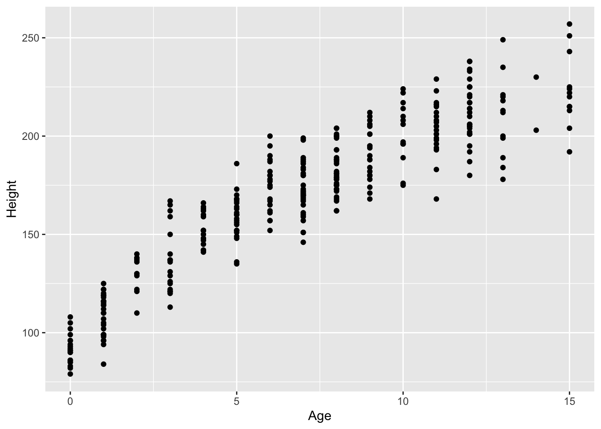
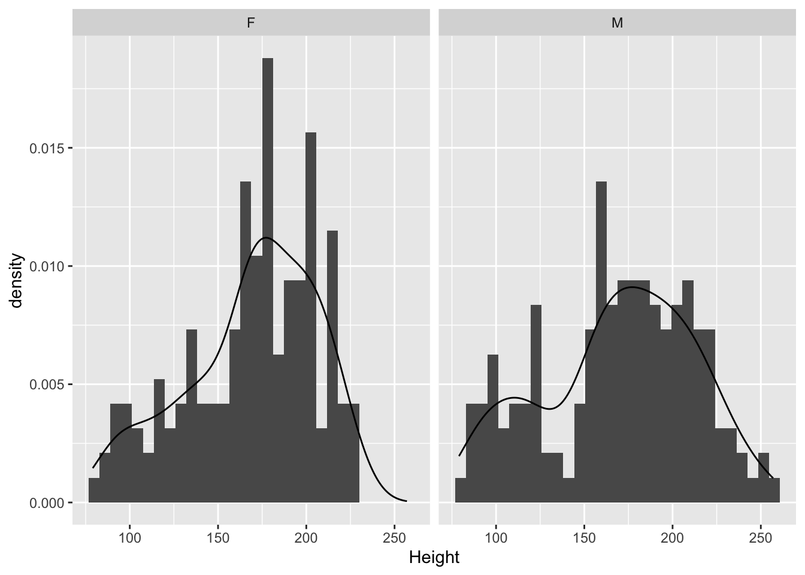
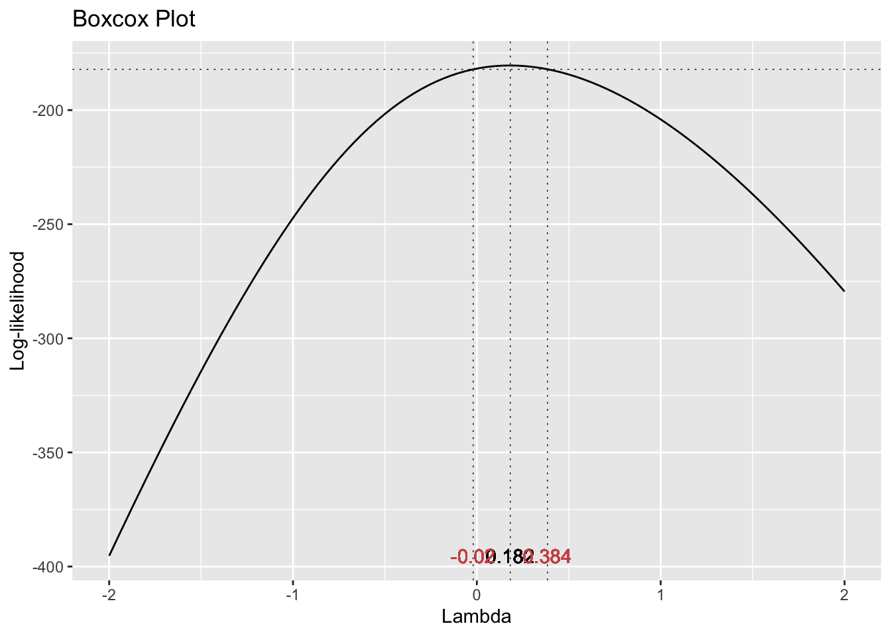
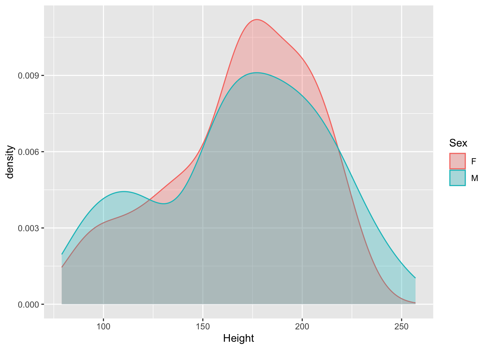
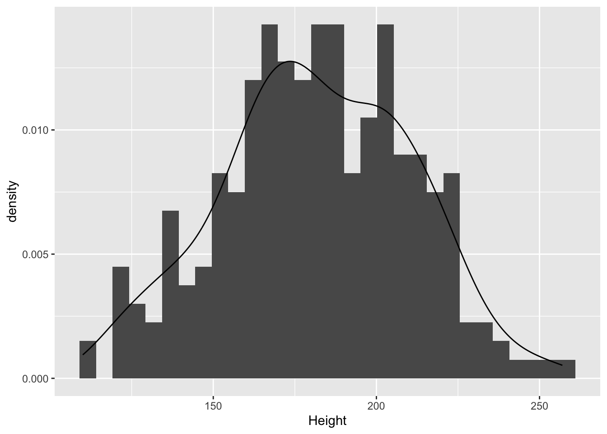

Code
library(tidyverse)library(tidyverse)Load a dataset on elephants.
ele <- read.csv(
"../data/elephant.txt", sep = ""
)
str(ele)'data.frame': 312 obs. of 3 variables:
$ Sex : chr "F" "F" "F" "F" ...
$ Age : int 0 0 0 0 0 0 0 0 1 1 ...
$ Height: int 79 83 86 90 91 93 96 102 94 96 ...There are three variables:
Sex: M or FAge: in yearsHeight: shoulder height in cmExamine the distribution of the heights. Does that look normally distributed to you? Is it symmetrical and bell-shaped?
# your code goes hereThe data have both male and female elephants, so we should probably look at the sexes separately. Update your plot from the last exercise to include sex so we can see each distribution.
Have a look at the values of age.
ggplot(ele) +
aes(Age, Height) +
geom_point()
ggplot(ele) +
aes(Age) +
geom_bar()
There is a wide range of ages, from 0 to 15 years old. Many elephants (49, to be exact) are 0 or 1 year old. Are the data normal if we remove these? First make a new copy of the data (named ele2) with the baby elephants removed and then repeat our tests for normality.
# your code goes hereLet’s now estimate the population mean (with a 95% confidence interval) of Heights in the dataset with the baby elephants removed.
# note this code depends on an answer shown below. You should answer the previous question before running this code
t.test(ele2$Height)The t.test() function is very flexible. When given a single sample, it will provide the mean and 95% confidence interval. How would you interpret this confidence interval?
It also provides a test of whether the mean of the sample is significantly different from zero. If the p-value is less than 0.05, then we can say that there is evidence against the null hypothesis of a mean of zero. Now, in this case, of course this isn’t useful. Elephants can never have zero or negative height, so a mean height of zero is nonsensical.
Note that we can extract the estimate of the population mean and its confidence interval in the following way.
# note this code depends on an answer shown below. You should answer the previous question before running this code
t.test(ele2$Height)$estimate
t.test(ele2$Height)$conf.intHow was this confidence interval calculated?
The standard error (the standard deviation over multiple samples) for a sample mean can be estimated by \(s / \sqrt n\), where \(s\) is the sample standard deviation and \(n\) is the sample size.
# note this code depends on an answer shown below. You should answer the previous question then you can remove the numbers and uncomment the functions
n = 263# length(ele2$Height)
s = 29.08 #sd(ele2$Height)
( se = s / sqrt(n) )[1] 1.79315Once you have estimated the standard error, a confidence interval for a sample mean \(\bar x\) is simply
\[ \bar x \pm t \times \text{se} \]
The \(t\) value is the 0.975 quantile of the \(t\) distribution with the degrees of freedom given by \(n-1\).
qt(p = 0.975, df = n - 1)[1] 1.96906So, the sample mean and confidence interval is:
( xbar <- 181.5741 ) # mean(ele2$Height)[1] 181.5741( xbar - qt(p = 0.975, df = n - 1) * se )[1] 178.0433( xbar + qt(p = 0.975, df = n - 1) * se )[1] 185.1049Let’s say we are interested in testing whether the mean heights of male and female elephants are different. First, we can test for differences in the variances in the two sexes using Levene’s test, which is an important assumption of the t-test. In other words, if the assumption is violated, the results of the test may be misleading.
Preform the Levene’s test. What are the results? Should we continue with the t test?
# your code goes herePrestigeWe will again be using a well-known dataset called Prestige from the car R package. This dataset deals with prestige ratings of Canadian Occupations. The Prestige dataset has 102 rows and 6 columns. The observations are occupations.
This data frame contains the following columns:
education - Average education of occupational incumbents, years, in 1971.
income - Average income of incumbents, dollars, in 1971.
women - Percentage of incumbents who are women.
prestige - Pineo-Porter prestige score for occupation, from a social survey conducted in the mid-1960s.
census - Canadian Census occupational code.
type - Type of occupation. A factor with levels: bc, Blue Collar; prof, Professional, Managerial, and Technical; wc, White Collar. (includes four missing values).
library(tidyverse)
library(car)
data(Prestige)Perform a one-sample t-test to test the hypothesis that the true mean prestige is exactly 50.
# your code goes hereTest whether the true mean prestige score for professionals is 50% more than the true mean prestige score for white collar occupations.
# your code goes hereExplore the skewness in the income variable using a boxplot.
Prestige |>
ggplot() +
aes(income) +
geom_boxplot() # or
boxplot(Prestige$income, horizontal = TRUE)Describe the skewness of income variable and why we examine it.
Find a suitable power transformation to correct the skewness.
library(lindia)
gg_boxcox(lm(income ~ 1, data = Prestige))Which power transformation might correct the skewness? Make a boxplot of the transformed data. Compare the skewness seen in this plot with the one used for Exercise 4.6. Did the transformation improve the skewness?
# your code goes hereCompute the 95% confidence interval for the true mean income using the raw and log-transformed data.
# your code goes hereggplot(ele) +
aes(x = Height) +
geom_histogram(
aes(y = after_stat(density)) # this aes goes here because
# it only applies to geom_histogram
) +
geom_density()
We can test whether these data conform to a normal distribution model with a Shipiro-Wilk test for normality. The null hypothesis is that the data came from a population that is normal.
shapiro.test(ele$Height)
Shapiro-Wilk normality test
data: ele$Height
W = 0.96785, p-value = 2.043e-06The very low p-value says that we can reject the null hypothesis, and conclude that these data are very unlikely to have come from a normal distribution.
ggplot(ele) +
aes(x = Height) +
geom_histogram(
aes(y = after_stat(density)) # this aes goes here because
# it only applies to geom_histogram
) +
geom_density() +
facet_grid( ~ Sex)
ggplot(ele) +
aes(x = Height, fill = Sex, colour = Sex) +
geom_density(alpha = .3)
It doesn’t look like there’s a major difference between the sexes in terms of the distribution of heights. Males might be a bit more variable than females (seeing the thicker tails).
ggplot(ele) + aes(Age) + geom_bar()
There is a wide range of ages, from 0 to 15 years old. Many elephants (49, to be exact) are 0 or 1 year old. Are the data normal if we remove these? We’ll first make a new copy of the data with the baby elephants removed and then repeat our tests for normality.
ele2 <- ele |> filter(Age > 1) # make new dataset with babies removed
ggplot(ele2) +
aes(x = Height) +
geom_histogram(
aes(y = after_stat(density))
) +
geom_density() 
That looks a bit more normal.
shapiro.test(ele2$Height)
Shapiro-Wilk normality test
data: ele2$Height
W = 0.99394, p-value = 0.3726Of elephants 2 years or older, there is no evidence that the heights do not come from a normal distribution (W = 1.0, p = 0.37). So, the heights of non-baby elephants appear approximately normally distributed.
car::leveneTest(Height ~ Sex, data = ele2)Levene's Test for Homogeneity of Variance (center = median)
Df F value Pr(>F)
group 1 2.6478 0.1049
261 A p-value of 0.1 is not huge, but it’s not enough evidence to reject the null hypothesis that the variance of male heights is equal to the variance of female heights (at the 5% level).
The default option for a t-test using the t.test() function is to not assume equal variances.
t.test(formula = Height ~ Sex, data = ele2)
Welch Two Sample t-test
data: Height by Sex
t = -1.3991, df = 251.38, p-value = 0.163
alternative hypothesis: true difference in means between group F and group M is not equal to 0
95 percent confidence interval:
-12.111371 2.050723
sample estimates:
mean in group F mean in group M
179.1259 184.1562 By this test, there is no strong evidence against the null hypothesis that the mean heights of male and female elephants are equal.
Welch Test does not assume equal variances. If we wanted to make this assumption (and therefore get more power):
t.test(formula = Height ~ Sex, var.equal = T, data = ele2)
Two Sample t-test
data: Height by Sex
t = -1.4044, df = 261, p-value = 0.1614
alternative hypothesis: true difference in means between group F and group M is not equal to 0
95 percent confidence interval:
-12.083154 2.022506
sample estimates:
mean in group F mean in group M
179.1259 184.1562 The result is essentially the same in this case.
# Alternative hyp: greater or less than 50
t.test(Prestige$prestige, mu=50)
# Alternative hyp: greater than 50
t.test(Prestige$prestige, mu=50, alternative="greater")prof.data <- Prestige |>
filter(type=="prof") |>
pull(prestige)
wc.data <- Prestige |>
filter(type=="wc") |>
pull(prestige)
t.test(prof.data,
wc.data,
mu = 0.5 * mean(wc.data),
alternative = 'greater')t.test(Prestige$income)
t.test(log(Prestige$income))More R code examples are here